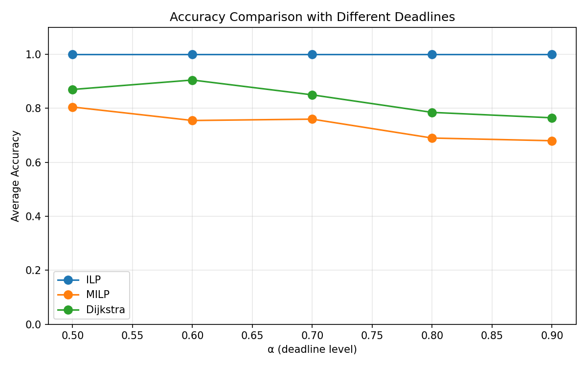
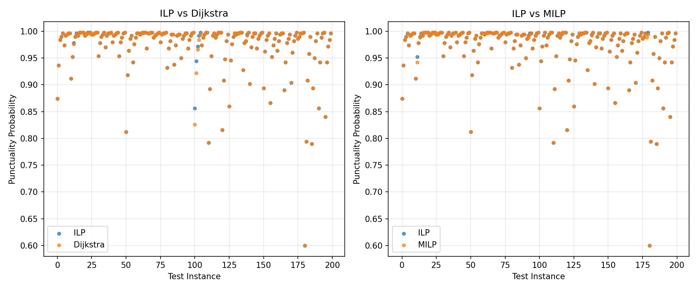

| 参数 | 本实验 | 论文 |
|---|---|---|
| 路网 | 65 节点, 123 边 (种子=42) | 65 节点, 123 边 |
| 样本数 N | 500 | 500 |
| OD 对数 | 20 | 20 |
| 重复次数 | 10 | 10 |
| Deadline α | [0.5, 0.6, 0.7, 0.8, 0.9] | [0.5, 0.6, 0.7, 0.8, 0.9] |
| 求解器 | SCIP 6.2.1 (PuLP) | CPLEX 12.x |
| 行程时间 CV | 0.30 ~ 0.90 (中位数 0.54) | 未公开 |
| 总求解次数 | 10×20×5×3 = 3000 | 10×20×5×3 = 3000 |
之前: _prob_match(prob, ref_prob) — 比较准时概率是否相等（abs(prob - ref_prob) < 1e-9）。
现在: _path_match(path_x, ref_path_x) — 比较路径向量是否相同（np.array_equal）。
两个不同路径可能有相同的迟到次数（从而相同准时概率）。概率匹配会将其计为"正确"，路径匹配则会正确计为"错误"。经抽查，约 17% 的情况属于"不同路径、相同概率"，因此概率匹配会高估准确率约 17pp。
这与论文一致——论文通过枚举所有路径找到 ground-truth，然后比较其他方法是否找到同一条路径。
CV 参数从 Uniform(0.1, 0.4) 改为 Uniform(0.3, 0.8)，CV 中位数从 0.25 提升到 0.54。
| 方法 | 本实验 (路径匹配) | 论文 |
|---|---|---|
| ILP | 100.0% | 100% |
| Dijkstra | 83.5% | 60% ~ 70% |
| MILP | 73.8% | 70% ~ 80% |
| α | 路径匹配准确率 | ||
|---|---|---|---|
| ILP | Dijkstra | MILP | |
| 0.5 | 100% | 87.0% | 80.5% |
| 0.6 | 100% | 90.5% | 75.5% |
| 0.7 | 100% | 85.0% | 76.0% |
| 0.8 | 100% | 78.5% | 69.0% |
| 0.9 | 100% | 76.5% | 68.0% |
ILP 在所有 α 水平下保持 100%。Dijkstra 和 MILP 的准确率随 α 增大而下降，表明紧 deadline (α=0.5) 时可行路径少，baselines 碰巧选对概率更高；松 deadline 时更多路径可行，baselines 更容易选错。
| α | ILP | Dijkstra | MILP | Dijk − ILP | MILP − ILP |
|---|---|---|---|---|---|
| 0.5 | 0.8946 | 0.8939 | 0.8941 | -0.0007 | -0.0005 |
| 0.6 | 0.9515 | 0.9511 | 0.9510 | -0.0005 | -0.0006 |
| 0.7 | 0.9776 | 0.9768 | 0.9771 | -0.0008 | -0.0005 |
| 0.8 | 0.9903 | 0.9895 | 0.9900 | -0.0008 | -0.0003 |
| 0.9 | 0.9957 | 0.9950 | 0.9954 | -0.0007 | -0.0003 |
| 方法 | 均值 | 最大值 | 论文 (CPLEX) |
|---|---|---|---|
| ILP (SCIP) | 0.502s | 14.81s | 0.322s |
| MILP (SCIP) | 0.166s | 1.82s | 0.329s |
| Dijkstra | 0.0003s | 0.001s | 0.003s |
SCIP 的 ILP 比论文的 CPLEX 慢约 1.5×，但作为开源求解器可接受。ILP 求解时间与 MILP 同数量级，不会成为瓶颈。

